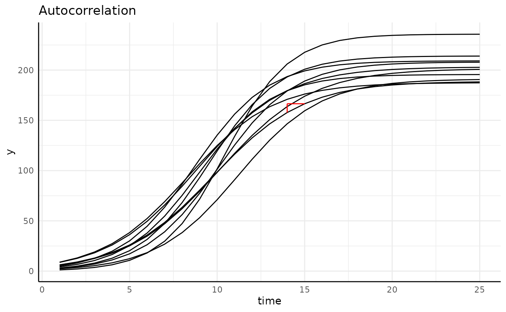
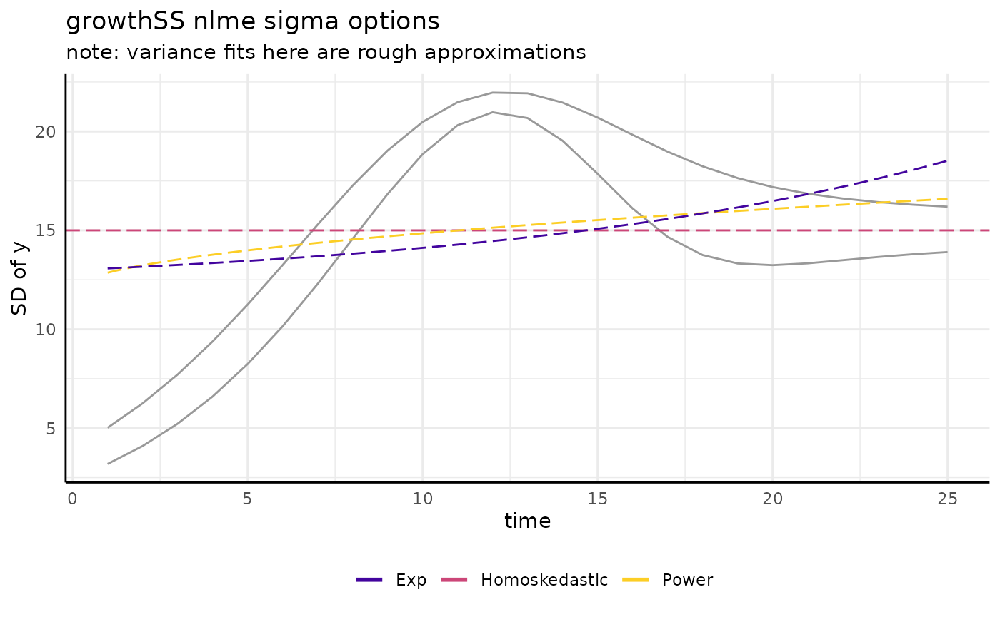

Intermediate Growth Modeling with `pcvr`
pcvr v1.0.0
Josh Sumner
Source:vignettes/articles/pcvrTutorial_igm.Rmd
pcvrTutorial_igm.RmdOutline
-
pcvrGoals - Load Package
- Why Longitudinal Modeling?
- Supported Model Builders
- Supported Curves
growthSSfitGrowthgrowthPlottestGrowth- Resources
pcvr Goals
Currently pcvr aims to:
- Make common tasks easier and consistent
- Make select Bayesian statistics easier
There is room for goals to evolve based on feedback and scientific needs.
Why Longitudinal Modeling?
plantCV allows for user friendly high throughput image
based phenotyping
Resulting data follows individuals over time, which changes our statistical needs.
Longitudinal Data is:
- Autocorrelated
- Often non-linear
- Heteroskedastic


r1 <- range(simdf[simdf$time == 1, "y"])
r2 <- range(simdf[simdf$time == 5, "y"])
r3 <- range(simdf[simdf$time == 10, "y"])
r4 <- range(simdf[simdf$time == 20, "y"])
main <- ggplot(simdf, aes(time, y, group = interaction(group, id))) +
geom_line() +
annotate("segment", x = 1, xend = 1, y = r1[1], yend = r1[2], color = "blue", linewidth = 2) +
annotate("segment", x = 5, xend = 5, y = r2[1], yend = r2[2], color = "blue", linewidth = 2) +
annotate("segment", x = 10, xend = 10, y = r3[1], yend = r3[2], color = "blue", linewidth = 2) +
annotate("segment", x = 20, xend = 20, y = r4[1], yend = r4[2], color = "blue", linewidth = 2) +
labs(title = "Heteroskedasticity") +
pcv_theme() +
theme(axis.title.x = element_blank(), axis.text.x = element_blank())
sigma_df <- aggregate(y ~ group + time, data = simdf, FUN = sd)
sigmaPlot <- ggplot(sigma_df, aes(x = time, y = y, group = group)) +
geom_line(color = "blue") +
pcv_theme() +
labs(y = "SD of y") +
theme(plot.title = element_blank())
design <- c(
area(1, 1, 4, 4),
area(5, 1, 6, 4)
)
hetPatch <- main / sigmaPlot + plot_layout(design = design)
hetPatch
Supported Model Builders
Five model building options are supported through the
type argument of growthSS:
nls, nlrq, nlme,
mgcv, and brms
Other than mgcv all model builders can fit 9 types of
growth models.
Supported Model Builders 2
| “nls” | “nlrq” | “nlme” | “mgcv” | “brms” |
|---|---|---|---|---|
stats::nls |
quantreg::nlrq |
nlme::nlme |
mgcv::gam |
brms::brms |
type = “nls”
Non-linear least squares regression.
| Longitudinal Trait | nls |
|---|---|
| Non-linearity | ✅ |
| Autocorrelation | ❌ |
| Heteroskedasticity | ❌ |
type = “nlrq”
| Linear Regression | Quantile Regression |
|---|---|
| Predicts mean E(Y|X) | Predicts quantiles Q(Y|X) |
| Works with small N | Requires higher N |
| Assumes Normality | No distributional assumptions |
| E(Y|X) breaks with transformation | Q(Y|X) robust to transformation |
| Sensitive to outliers | Robust to outliers |
| Computationally cheap | Computationally more expensive |
type = “nlrq”
Non-linear quantile regression.
| Longitudinal Trait | nlrq |
|---|---|
| Non-linearity | ✅ |
| Autocorrelation | ❌ |
| Heteroskedasticity | ✅ |
type = “nlme”
Non-linear Mixed Effect Models
| Longitudinal Trait | nlme |
|---|---|
| Non-linearity | ✅ |
| Autocorrelation* | ✅ |
| Heteroskedasticity | ✅ |
| Being a headache | ✅ |
type = “mgcv”
General Additive Models Only
| Longitudinal Trait | gam |
|---|---|
| Non-linearity | ✅ |
| Autocorrelation | ❌ |
| Heteroskedasticity | ❌ |
| Unparameterized | ✅ |
type = “brms”
Bayesian hierarchical Models
| Longitudinal Trait | brms |
|---|---|
| Non-linearity | ✅ |
| Autocorrelation | ✅ |
| Heteroskedasticity | ✅ |
Supported Growth Models
There are 6 main growth models supported in pcvr,
although there are several other options as well as changepoint models
made of combinations between them.
Of the general 6 we are looking at, 3 are asymptotic, 3 are non-asympototic.
Supported Growth Models
There are an additional 3 sigmoidal models based on the Extreme Value Distribution. Those are Weibull, Frechet, and Gumbel. The authors generally prefer Gompertz to these options but for your data it is possible that these could be a better fit.
Supported Growth Models 2
There are also two double sigmoid curves intended for use with recovery experiments.
## Warning: Removed 1 row containing missing values or values outside the scale range
## (`geom_line()`).
Supported Growth Models 3
Generalized Additive Models (GAMs) are also supported.
Survival Models
Survival models can also be specified using the “survival” keyword.
These models can use the “survival” or “flexsurv” backends where
distributions can be specified as
model = "survival {distribution}".
For details please see the growthSS documentation.
GAMs
m <- mgcv::gam(y ~ group + s(time, by = factor(group)), data = simdf)
start <- min(simdf$time)
end <- max(simdf$time)
support <- expand.grid(
time = seq(start, end, length = 400),
group = factor(unique(simdf$group))
)
out <- gam_diff(
model = m, newdata = support, g1 = "a", g2 = "b",
byVar = "group", smoothVar = "time", plot = TRUE
)
gam_diff differences
gam_diff(
model = m, newdata = support, g1 = "a", g2 = "b",
byVar = "group", smoothVar = "time", plot = TRUE
)$plot
growthSS - form
With a model specified a rough formula is required to parse your data to fit the model.
The layout of that formula is:
outcome ~ time|individual/group
growthSS - form 2
Here we would use y~time|id/group
head(simdf)## id group time y
## 1 id_1 a 1 6.539088
## 2 id_1 a 2 8.973278
## 3 id_1 a 3 12.263465
## 4 id_1 a 4 16.668316
## 5 id_1 a 5 22.490524
## 6 id_1 a 6 30.057423
growthSS - sigma
“nlme” and “brms” models accept a sigma argument. Here
we will only look at nlme models as brms models are the subject of the
Advanced
Growth Modeling tutorial.
growthSS - sigma
There are lots of ways to model a trend like that we see for sigma.
pcvr offers three options through growthSS
for nlme models.
draw_power_sigma <- function(x) {
return(12 + (x * 0.75)^(2 * 0.26))
} # difficult to recapitulate from nlme
draw_exp_sigma <- function(x) {
return(12 + exp(2 * x * 0.75 * 0.05))
}
ggplot(sigma_df, aes(x = time, y = y)) +
geom_line(aes(group = group), color = "gray60") +
geom_hline(aes(yintercept = 15, color = "Homoskedastic"), linetype = 5, key_glyph = draw_key_path) +
geom_function(fun = draw_power_sigma, aes(color = "Power"), linetype = 5) +
geom_function(fun = draw_exp_sigma, aes(color = "Exp"), linetype = 5) +
scale_color_viridis_d(option = "plasma", begin = 0.1, end = 0.9) +
guides(color = guide_legend(override.aes = list(linewidth = 1, linetype = 1))) +
pcv_theme() +
theme(legend.position = "bottom") +
labs(
y = "SD of y", title = "growthSS nlme sigma options", color = "",
subtitle = "note: variance fits here are rough approximations"
)
growthSS - “none” sigma
Variance can be modeled as homoskedastic by group.
ggplot(sigma_df, aes(x = time, y = y, group = group)) +
geom_hline(aes(yintercept = 13.8, color = "Homoskedastic"), linetype = 5, key_glyph = draw_key_path) +
geom_line(aes(color = group)) +
scale_color_manual(values = c(scales::hue_pal()(2), "gray40")) +
pcv_theme() +
labs(y = "SD of y", color = "Sigma") +
theme(plot.title = element_blank(), legend.position = "bottom")
growthSS - “power” sigma
Variance can be modeled using a power of the x term.
ggplot(sigma_df, aes(x = time, y = y, group = group)) +
geom_function(fun = draw_power_sigma, aes(color = "Power"), linetype = 5) +
geom_line(aes(color = group)) +
scale_color_manual(values = c(scales::hue_pal()(2), "gray40")) +
pcv_theme() +
labs(y = "SD of y", color = "Sigma") +
theme(plot.title = element_blank(), legend.position = "bottom")## Warning: Multiple drawing groups in `geom_function()`
## ℹ Did you use the correct group, colour, or fill aesthetics?<img src=“/home/runner/work/pcvr/pcvr/docs/articles/pcvrTutorial_igm_files/figure-html/unnamed-chunk-20-1.png” alt=“Showing the”power” option for sigma.” width=“700” />
growthSS - “exp” sigma
Variance can be modeled using a exponent of the x term.
ggplot(sigma_df, aes(x = time, y = y, group = group)) +
geom_function(fun = draw_exp_sigma, aes(color = "Exp"), linetype = 5) +
geom_line(aes(color = group)) +
scale_color_manual(values = c(scales::hue_pal()(2), "gray40")) +
pcv_theme() +
labs(y = "SD of y", color = "Sigma") +
theme(plot.title = element_blank(), legend.position = "bottom")## Warning: Multiple drawing groups in `geom_function()`
## ℹ Did you use the correct group, colour, or fill aesthetics?<img src=“/home/runner/work/pcvr/pcvr/docs/articles/pcvrTutorial_igm_files/figure-html/unnamed-chunk-21-1.png” alt=“Showing the”exp” option for sigma.” width=“700” />
growthSS - varFunc Options
nlme varFunc objects can also be passed to the sigma argument in growthSS.
See ?nlme::varClasses for details.
growthSS - start
One of the useful features in growthSS is that you do not need to specify starting values for the supported non-linear models (double sigmoid options notwithstanding).
growthSS - tau
Finally, with mode=“nlrq” the tau argument takes one or more quantiles to fit a model for. By default this is 0.5, corresponding to the median.
growthSS - nls
nls_ss <- growthSS(
model = "logistic", form = y ~ time | id / group,
df = simdf, type = "nls"
)## Individual is not used with type = 'nls'.
lapply(nls_ss, class)## $formula
## [1] "formula"
##
## $start
## [1] "list"
##
## $df
## [1] "data.frame"
##
## $pcvrForm
## [1] "formula"
##
## $type
## [1] "character"
##
## $model
## [1] "character"
##
## $call
## [1] "call"
growthSS - nlrq
nlrq_ss <- growthSS(
model = "logistic", form = y ~ time | id / group,
df = simdf, type = "nlrq",
tau = seq(0.01, 0.99, 0.04)
)## Individual is not used with type = 'nlrq'.
lapply(nls_ss, class)## $formula
## [1] "formula"
##
## $start
## [1] "list"
##
## $df
## [1] "data.frame"
##
## $pcvrForm
## [1] "formula"
##
## $type
## [1] "character"
##
## $model
## [1] "character"
##
## $call
## [1] "call"
growthSS - nlme
nlme_ss <- growthSS(
model = "logistic", form = y ~ time | id / group,
df = simdf, sigma = "power", type = "nlme"
)
names(nlme_ss)## [1] "formula" "start" "df" "pcvrForm" "type" "model" "call"
names(nlme_ss$formula)## [1] "model" "random" "fixed" "groups" "weights" "cor_form"
growthSS - mgcv
mgcv_ss <- growthSS(
model = "gam", form = y ~ time | id / group,
df = simdf, type = "mgcv"
)## Individual is not used with type = 'gam'.
lapply(mgcv_ss, class)## $formula
## [1] "formula"
##
## $df
## [1] "data.frame"
##
## $pcvrForm
## [1] "formula"
##
## $type
## [1] "character"
##
## $model
## [1] "character"
##
## $call
## [1] "call"
growthSS - survival models
surv_ss <- growthSS(
model = "survival weibull",
form = y > 100 ~ time | id / group,
df = simdf, type = "survreg"
) # type = "flexsurv" has more distribution options
lapply(surv_ss, class)## $df
## [1] "data.frame"
##
## $formula
## [1] "formula"
##
## $pcvrForm
## [1] "formula"
##
## $distribution
## [1] "character"
##
## $type
## [1] "character"
##
## $model
## [1] "character"
##
## $call
## [1] "call"
growthSS - survival models
surv_ss <- growthSS(
model = "survival weibull",
form = y > 100 ~ time | id / group,
df = simdf, type = "survreg"
) # type = "flexsurv" has more distribution options
lapply(surv_ss, class)## $df
## [1] "data.frame"
##
## $formula
## [1] "formula"
##
## $pcvrForm
## [1] "formula"
##
## $distribution
## [1] "character"
##
## $type
## [1] "character"
##
## $model
## [1] "character"
##
## $call
## [1] "call"Note that here we still supply the standard phenotype data but give a
cutoff on the left hand side of the formula. That cutoff represents the
“event”. For example, given area in pixels germination might be
area_px>10 ~ time|id/group.
fitGrowth
Now that we have the components for our model from
growthSS we can fit the model with
fitGrowth.
fitGrowth 2
With non-brms models the steps to fit a model specified by
growthSS are very simple and can be left to
fitGrowth.
fitGrowth 3
Additional arguments can be passed to fitGrowth and are
used as follows:
| type | … |
|---|---|
| nls | passed to stats::nls
|
| nlrq | cores to run in parallel, passed to quantreg::nlrq
|
| nlme | passed to nlme::nlmeControl
|
| mgcv | passed to mgcv::gam
|
growthPlot
Models fit by fitGrowth can be visualized using
growthPlot.
p_nls <- growthPlot(nls_fit, form = nls_ss$pcvrForm, df = nls_ss$df)
p_nlrq <- growthPlot(nlrq_fit, form = nlrq_ss$pcvrForm, df = nlrq_ss$df)
p_nlme <- growthPlot(nlme_fit, form = nlme_ss$pcvrForm, df = nlme_ss$df)
p_mgcv <- growthPlot(mgcv_fit, form = mgcv_ss$pcvrForm, df = mgcv_ss$df)
p_surv <- growthPlot(surv_fit, form = surv_ss$pcvrForm, df = surv_ss$df)Hypothesis Testing
Hypothesis testing for frequentist non-linear growth models can be somewhat limited.
Broadly, testing is implemented for all backends by comparing models
against nested null models and for select backends non-linear testing is
available using testGrowth.
testGrowth - nls
testGrowth(nls_ss, nls_fit, test = "A")$anova## Analysis of Variance Table
##
## Model 1: y ~ A/(1 + exp((B[group] - time)/C[group]))
## Model 2: y ~ A[group]/(1 + exp((B[group] - time)/C[group]))
## Res.Df Res.Sum Sq Df Sum Sq F value Pr(>F)
## 1 995 259482
## 2 994 235430 1 24052 101.55 < 2.2e-16 ***
## ---
## Signif. codes: 0 '***' 0.001 '**' 0.01 '*' 0.05 '.' 0.1 ' ' 1
testGrowth - nls 2
testGrowth(nls_ss, nls_fit, test = list(
"A1 - A2",
"B1 - (B2*1.25)",
"(C1+1) - C2"
))## Form Estimate SE t-value p-value
## 1 A1 - A2 30.9620463 2.8416998 10.895608 3.418664e-26
## 2 B1 - (B2*1.25) -1.1834444 0.2181014 5.426121 7.235593e-08
## 3 (C1+1) - C2 0.5657608 0.1487875 3.802476 1.519847e-04
testGrowth - nlrq
Here we only print out the comparison for the model of the 49th percentile, but all taus are returned.
testGrowth(nlrq_ss, nlrq_fit, test = "A")[[13]]## Model 1: y ~ A[group]/(1 + exp((B[group] - time)/C[group]))
## Model 2: y ~ A/(1 + exp((B[group] - time)/C[group]))
## #Df LogLik Df Chisq Pr(>Chisq)
## 1 6 -4177.2
## 2 5 -4228.7 -1 103.02 < 2.2e-16 ***
## ---
## Signif. codes: 0 '***' 0.001 '**' 0.01 '*' 0.05 '.' 0.1 ' ' 1
testGrowth - nlme
testGrowth(nlme_ss, nlme_fit, test = "A")$anova## Model df AIC BIC logLik Test L.Ratio p-value
## nullMod 1 13 5345.185 5408.986 -2659.593
## fit 2 16 5336.665 5415.189 -2652.333 1 vs 2 14.52005 0.0023
testGrowth - nlme 2
testGrowth(nls_ss, nlme_fit, test = list(
"A.groupa - A.groupb",
"B.groupa - (B.groupb*1.25)",
"(C.groupa+1) - C.groupa"
))## Form Estimate SE Z-value p-value
## 1 A.groupa - A.groupb 31.406942 4.3866581 7.159651 8.088266e-13
## 2 B.groupa - (B.groupb*1.25) -1.143088 0.2559811 4.465516 7.987592e-06
## 3 (C.groupa+1) - C.groupa 1.000000 0.0000000 Inf 0.000000e+00
testGrowth - mgcv
Due to GAMs nature we cannot test parameters individually.
testGrowth(mgcv_ss, mgcv_fit)$anova## Analysis of Deviance Table
##
## Model 1: y ~ s(time)
## Model 2: y ~ 0 + group + s(time, by = group)
## Resid. Df Resid. Dev Df Deviance F Pr(>F)
## 1 992.49 315705
## 2 985.48 236017 7.0101 79688 47.572 < 2.2e-16 ***
## ---
## Signif. codes: 0 '***' 0.001 '**' 0.01 '*' 0.05 '.' 0.1 ' ' 1
testGrowth - surv
The flexsurv backend provides more flexibility, but
standard survreg models are tested using
survival::survdiff
testGrowth(surv_ss, surv_fit)## Call:
## survival::survdiff(formula = ss$formula, data = ss$df)
##
## N Observed Expected (O-E)^2/E (O-E)^2/V
## group=a 20 20 20.7 0.0270 0.0939
## group=b 20 20 19.3 0.0291 0.0939
##
## Chisq= 0.1 on 1 degrees of freedom, p= 0.8Final Considerations
- Pick model builders and parameterizations based on your needs
- Use GAMs sparingly, they present interpretability problems compared to the parameterized models.
- Consider the biology behind your observed data while picking a growth model.
Resources
If you run into a novel situation please reach out and we will try to
come up with a solution and add it to pcvr if possible.
Good ways to reach out are the help-datascience slack channel and pcvr github repository.